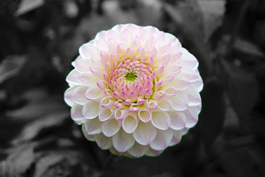

Cyrus Bonyadi and Jordan Ramus
This project uses edge detection to create a border for an automatic color splasher. While color splashing is commonly done circa 2007, it has always been a difficult task. Traditionally, one must zoom in and specifically outline a border to create a mask for the part of the image meant to be in color. Our program gives a reasonably functional UI to allow you to automatically color splash objects in an image.
Some sample work is as follows:



There is even this handy legend that appears to inform you of your options available on each screen: